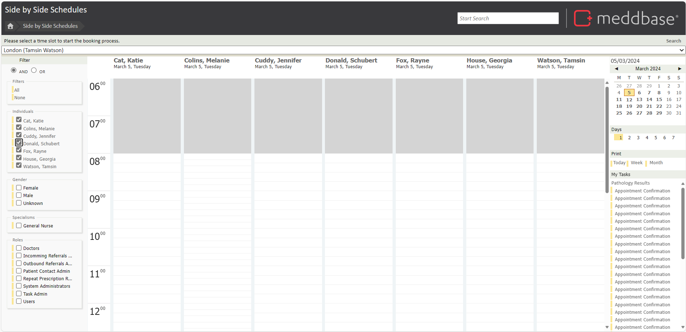
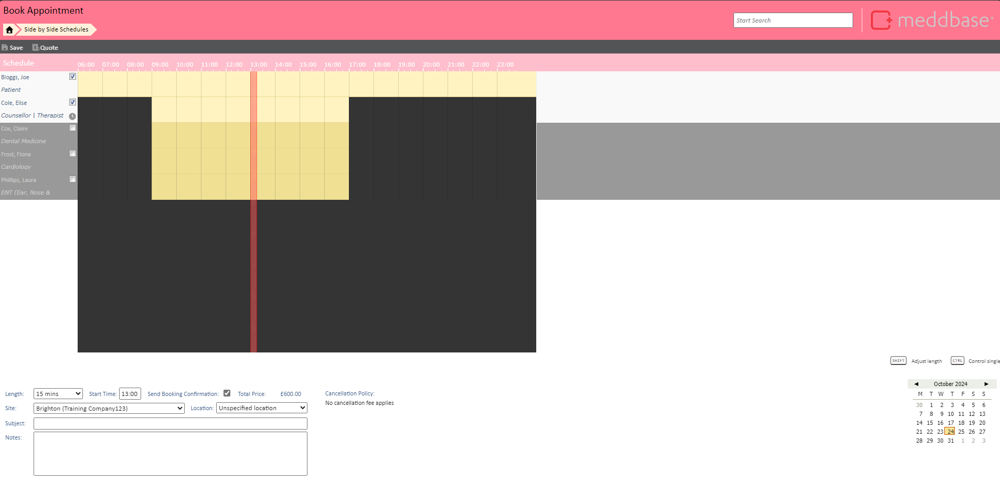

There are many ways to book appointments within Meddbase, using advance search tools to ensure you get the best appointment for your patient.
One way to book an appointment is via the side-by-side scheduler.
The purpose of this article is to explain how to book an appointment using the Side by Side Scheduler within Meddbase.
This tool provides an overview of Clinicians' schedules, seeing who is available and when at a moments glance. You can access the Side-by-side Scheduler in 2 ways:
The page you are presented with once opening the tool, will give you an instant visual representation of your clinic’s calendar.

You can change the site by using the drop down box at the top of the page.
The right hand pane allows you to adjust which day and the range of days being shown (You can also print the clinic schedule for the day, week or month here).
Dates in which there is availability with at least 1 clinician, will be in bold.
The left hand pane will allow you to filter your view based on a number of parameters, these include:
In order to make an appointment from this page simply locate an appropriate slot and click to begin the booking process.
The next page will prompt you to pick a patient for this appointment, however, if this is a new patient, you may also create a patient from this page.
Once a patient is selected you will be progressed through the booking process. The final booking screen is the attendees page.

Make any changes you desire here and save to complete the booking process.